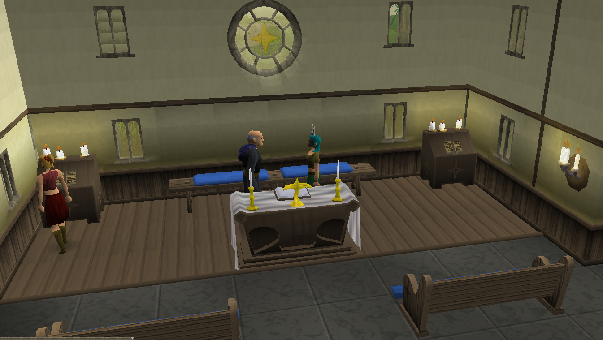
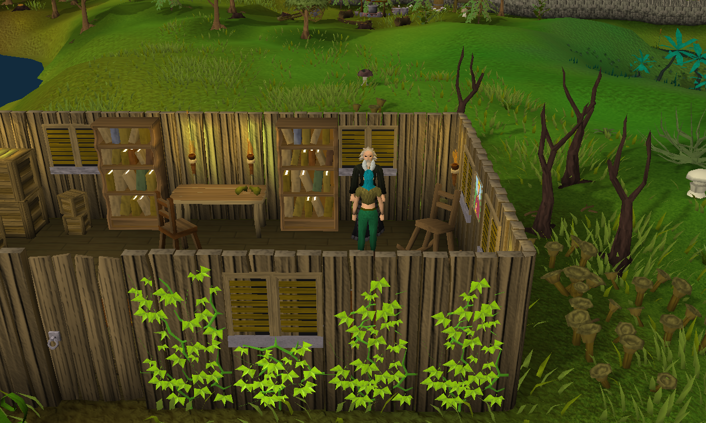
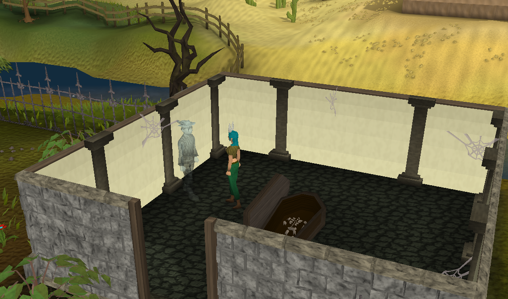
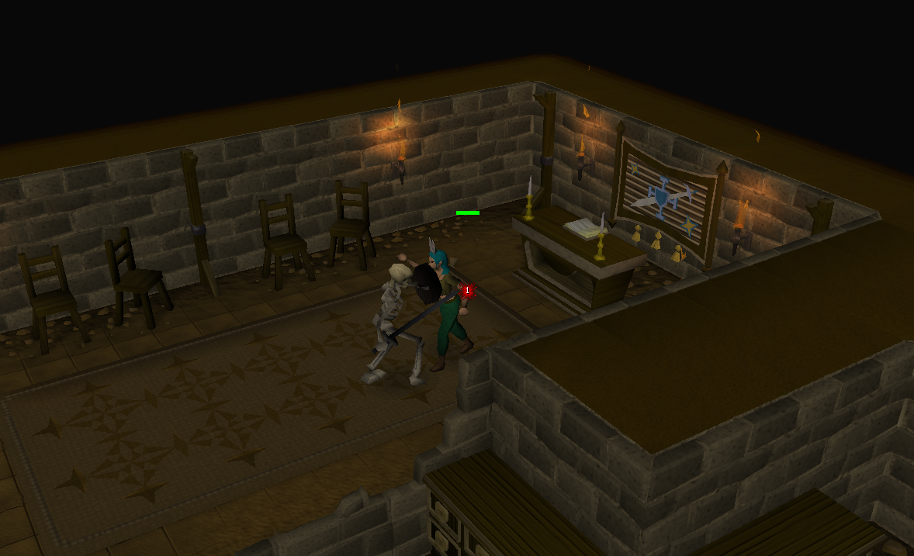
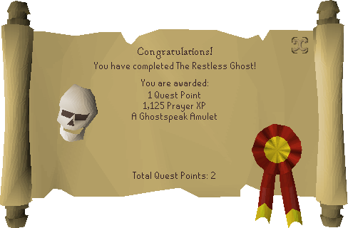

The Restless Ghost
Help the Father and the ghost go back to sleep.
- There are no requirements
To get started make your way to the church in Lumbridge and speak with Father Aereck.
He tells you that there is a ghost issue by the graveyard and to speak with Father Urhney to see how to deal with the ghostly issue.
Head over to Father Urhney located in Lumbridge Swamp, he will act as if he can't be bothered speaking with you. You just have to let him know that Father Aereck sent him and he makes some smartelic response saying that he's been gone from the city for about five months now. He gives you a ghost speak amulet to be able to speak with the restless ghost.
Once you have made it to the graveyard, open the coffin and a ghost will come out. Equip your amulet and then speak with the ghost. He freaks out that you can understand him but you get him back on track to tell you why he hasn't gone to rest. He tells you that his skull was taken and was moved elsewhere. He said that it's downstairs of the wizard's tower.
 Once you've made it downstairs of the wizard tower, search the alter where you find his skull. A skeleton will come alive
from the bones in the corner and attack you. For Skillers, you do not have to kill the skeleton to continue. Head back to the graveyard
once you've made it away. You can safely teleport without losing any items so just use the unlimited home teleport.
Once you have made it back to the graveyard, open the coffin and use the skull on the coffin. He will be set free and that is the end of the quest.
